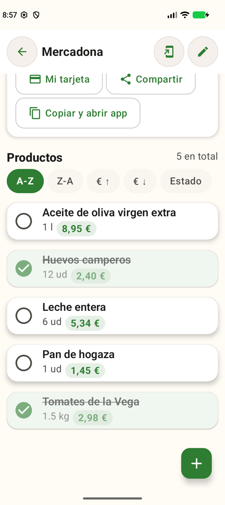
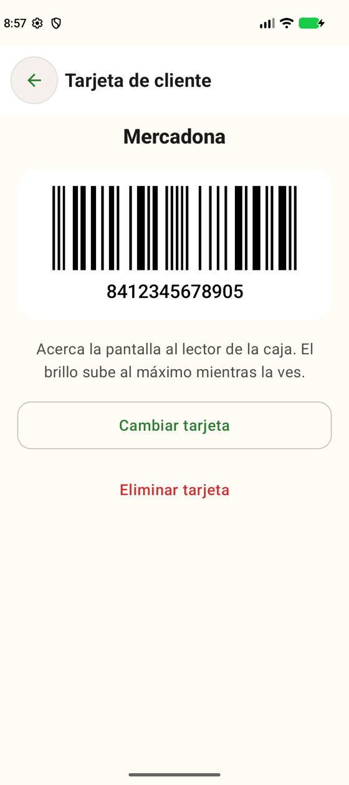
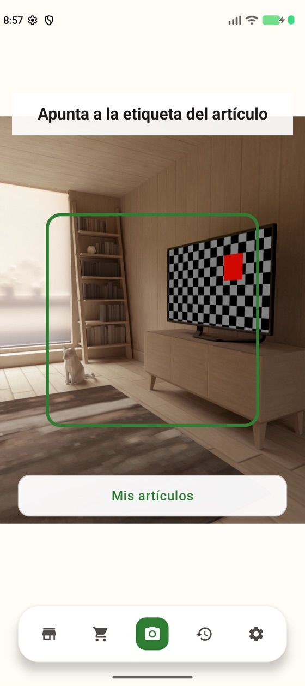
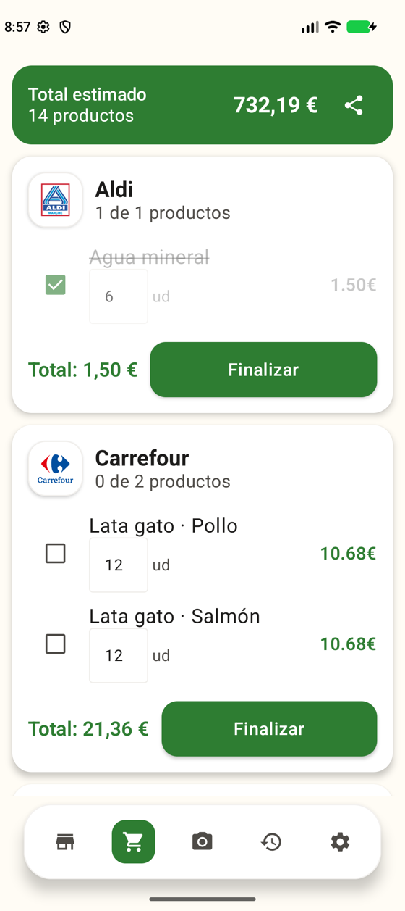
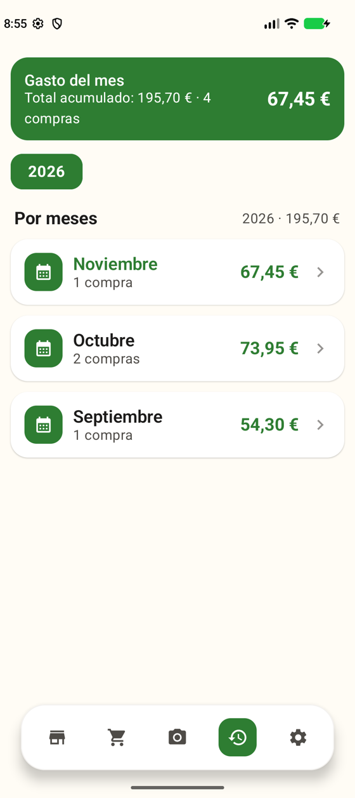
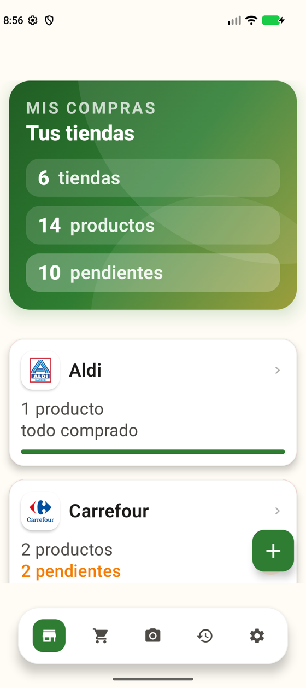

Reconoce productos
Por código de barras o, si no lo hay, por su aspecto: tú registras una foto de cada sabor y la app lo distingue, sin internet.
Apunta la cámara a un producto, el móvil vibra y te dice qué es con letras enormes. Pensada para quien no puede fiarse de los ojos para distinguir una lata de otra.
Hay quien no puede fiarse de los ojos para distinguir un producto de otro: latas de comida para gatos con el mismo envase y solo una pegatina para indicar el sabor, botes casi idénticos, etiquetas diminutas.
Apuntas la cámara → el móvil vibra → una pantalla con letras enormes te dice qué es.
Reconoce lo que llevas en la mano y organiza lo que te falta por comprar.
Por código de barras o, si no lo hay, por su aspecto: tú registras una foto de cada sabor y la app lo distingue, sin internet.
Al empezar, busca las cadenas que tienes cerca y las añade por ti. Ves su horario, si están abiertas ahora y cómo llegar.
Escanéala una vez, sea código de barras o QR, y se muestra a pantalla completa con el brillo al máximo, lista para la caja.
Productos agrupados por tienda, total estimado, historial por meses y la lista lista para compartir por WhatsApp.
Texto pequeño, normal, grande o muy grande sin que nada se deforme; alto contraste, modo oscuro y botones grandes.
Sin cuentas ni anuncios. Las fotos de la cámara se procesan en el móvil y nunca se suben.
Descarga el APK y ábrelo. Más abajo te explicamos cómo, paso a paso.
Si quieres, usa tu ubicación una sola vez para encontrar los supermercados cercanos. Tú eliges cuáles añadir.
Registra una vez tus productos con la cámara; después, solo tienes que apuntar y el móvil te dirá cuál es.
Datos de demostración con productos extremeños: Torta del Casar, Queso de la Serena, Cerezas del Jerte…






Mis Compras se distribuye como archivo APK, fuera de Google Play. Android te lo avisará: es lo normal con las apps que no vienen de la tienda.
Requisitos: Android 12 o superior · unos 78 MB libres.
Todas las versiones van firmadas con la misma clave. Huella SHA‑256 del certificado:
f78c9ebe45721ac17c8e1627f0c8b01a0755d4716425c8fd4307fcf23385b4d5
Puedes comprobarla con apksigner verify --print-certs.
Sin cuentas, sin anuncios, sin analíticas. Solo hay dos consultas a internet, y únicamente cuando tú lo pides.
Al pulsar «Buscar tiendas cercanas» se envían tus coordenadas aproximadas a los servidores públicos de OpenStreetMap. Puede ser ubicación aproximada.
Al registrar un producto nuevo se consulta Open Food Facts solo con el código, para rellenar el nombre.
Tiendas, productos, fotos, tarjeta de cliente y reconocimiento se quedan en tu móvil.
Casi nunca. Reconocer productos, la lista, los gastos y la tarjeta de cliente funcionan sin conexión. Solo hace falta para buscar tiendas cercanas y para autocompletar el nombre de un código nuevo.
Busca Mercadona, Carrefour, Lidl, Aldi, Dia, Hipercor / El Corte Inglés, Alcampo, Consum, Eroski y BM, y puede abrir la app oficial de cada una. Puedes añadir cualquier otra tienda a mano.
Sí: la app lee y vuelve a dibujar códigos de barras y QR. Ten en cuenta que algunas cadenas renuevan el QR de su app cada pocos minutos; en ese caso una copia no valdría en caja y es mejor abrir la app de la tienda desde Mis Compras.
Los que tengan código de barras, sí. Los de aspecto casi idéntico (como dos sabores con la misma lata) los distingue a partir de las fotos que registres tú. Es un sistema nuevo y se está afinando con productos reales.
Por ahora solo para Android 12 o superior.
Lleva dentro el modelo que reconoce productos y los lectores de códigos, para que funcionen sin internet.